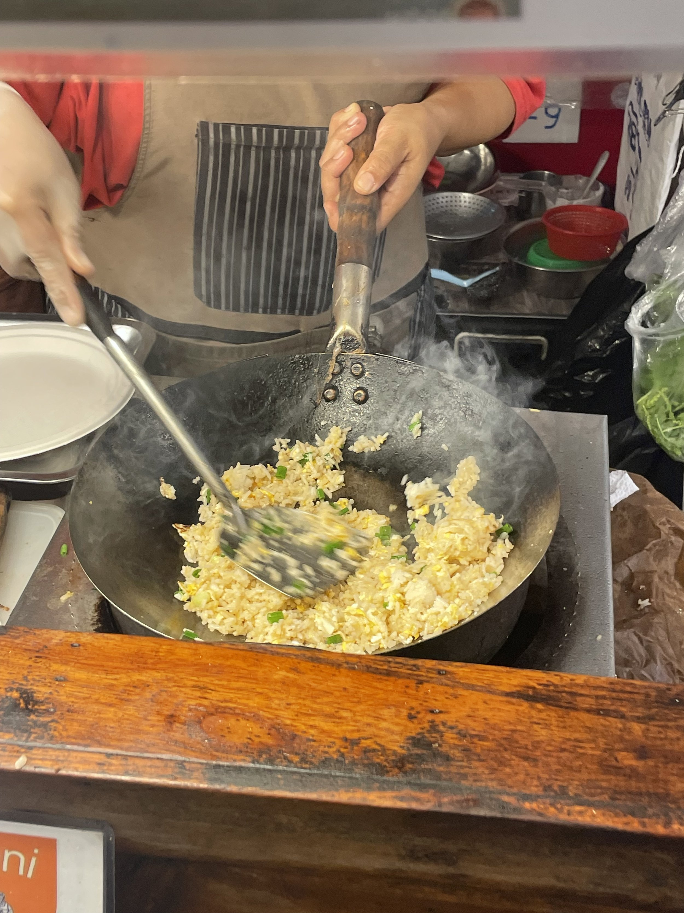
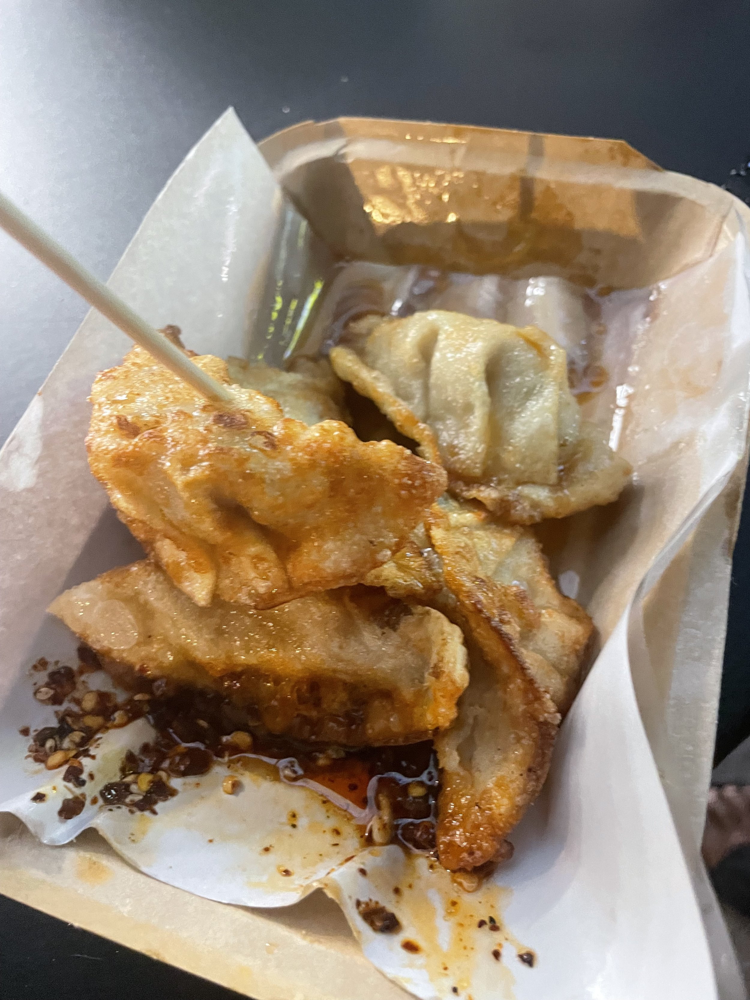

As this is the very first entry on Four Go East, I'm just going to launch straight in.
R has found and been in touch with several World School groups on social media, and today was our second meet-up since being in Chiang Mai — albeit with a new group, specifically a local home-schooling group made up of expats. It was around a 40-minute ride from the place we're staying, so we took advantage of one of the many local 'Red Buses', which cost a standard 30 Thai Baht (฿30) per person — around 70p. The difference between these and regular taxis or Tuk-Tuks is that you can ride with various groups of people if they're heading in the same direction, making it closer to a bus than a taxi. As we are a family of four it tends not to make much of a difference, but it's a nice experience. Our driver, Mr Narin, quoted a very reasonable ฿1,000 (£23 approx.) to take us there, wait around for as long as we needed, and bring us back with any stops en route. As we'd been warned to expect to pay around 50% more than this, we jumped at it.
The meet-up was at Yuu Baan Studio — a café and play area that features a koi carp pond and small paddling pool with a watermill motif and slate water slide. Nice enough, but you get the feeling the place was built and marketed with the Western traveller in mind; oddly, it lacks any Wi-Fi, which we found curious.
It varies, but usually at meet-ups families arrive sporadically, introduce themselves and socialise. Perhaps a touch self-consciously at first, but — as most home/world-schoolers claim to have a similar mindset and way of thinking — it's not long before travel tales are swapped, advice asked for and given, links from home explored, coincidences unearthed. This one felt a little different. We arrived, ordered drinks, made our way outside to the group and said hello. A few hellos back, nothing more. No problem — people (including us) can take a while to warm up. Personally, nothing would horrify me more than an over-extrovert bounding over, bugling "HEY GUYS!! GREAT TO HAVE YOU!! COME AND TELL US ALL ABOUT YOURSELVES!!" at the top of their lungs. I know. I'm British.
We had our drinks, ordered some food for E & e. A mum introduced herself and sat down to chat. She described herself, when asked where she hailed from, as a 'proud Israeli'. Brrrrrr. Giving the benefit of the doubt is tricky in that situation, as doing so presumes a colossal amount of social ignorance. It's basically that, or Zionism. Ironically, this was on the day when the latest ceasefire came into effect — giving Palestinians a tiny glimmer of hope against the brutal and obnoxiously public genocide they have been suffering.
Things got weirder, albeit over the course of an hour or so and in a very sedate, everyone-sitting-outside-enjoying-drinks-and-food kind of way. An Aussie family arrived, and we greeted them warmly. Once they got settled we chatted for a while. The dad worked back in Oz as a miner, having recently cut his hours so he could travel most of the time, only going back one week every month. We engaged in the usual adulting-talk of moaning about the cost of living: rent, food, bills. It was then that he, in one sentence, showed his true colours:
I'll be honest, I didn't catch it at first — I thought he was talking about savings, and how there's always something that prevents them. But then a moment later his true meaning thumped into my head. No. He's talking about foreigners. Foreign aid, maybe. Or money set aside for immigration services. Whatever — the type of lazy bigotry and 'I wouldn't describe myself as right-wing, but here's some right-wing comments anyway' narrative that has sadly and alarmingly become so mainstream. What made it doubly odd is that — as mentioned — the world-schooling community could reasonably be described as alternative, almost borderline hippy. It stood out just as much as a beer-bellied, England-shirt-wearing skinhead at a Ravi Shankar concert. We won't be keeping in touch.
Thai people don't cook.
That may be something of an exaggeration, but that's what we've heard from several locals. Thai street food is so affordable that most people simply eat out rather than buy ingredients and prepare meals at home. It's integral to Thai culture — fast, flavourful, and everywhere.
So far we have visited many food markets both day and night, and sampled a wide range: beef skewers, seafood, dumplings, noodles, rice, tom yum, pad thai, panang curry, as well as lychee juice, coconut and fresh fruit smoothies. None of this has been entirely new to us — we were in Bangkok just over a year ago — but experiencing it fresh from the vendors, amongst the locals, sitting at wobbly plastic tables whilst the Chiang Mai nightlife buzzes and rushes around us in a whirling typhoon of lights and noise, is intoxicating.


One can eat incredibly well for only a few hundred baht a day (less than £7). Most main meals cost between ฿60–฿120, depending on whether you're in a very local area or a more tourist-facing place. As a family of four — E & e easily eating about as much as us — it's not quite as pleasingly cheap as it sounds, and although we're not penny-pinching, what we tend to find is that we stick fairly well to our daily budget until mid-afternoon, when somehow or other, in only an hour or two, we reliably blow past our target by failing to resist (yet again) the street food.
One other thing to note: the dominance pork has over every other meat. As non-pork eaters — not for religious reasons, simply for health ones — we have to constantly check and double-check that when something says 'chicken' or 'beef', it is just chicken or beef, with no porky surprises in store. Last year in Bangkok, we visited a place that even supplied pork in the egg fried rice.
Anyway. I'm going to stop going on about the food. For now. I'm sure I'll revisit it in later entries.
— J ✻